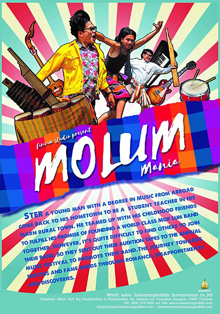

a genre of Thai music, often called "Thai country music," known for its poetic lyrics that reflect the rural lifestyle, cultural traits, and social issues of Thailand.
a traditional Lao-Isan folk singing style and a popular genre of music in Laos and northeastern Thailand.

a type of fast, traditional dance music from the ethnic Khmer people in Northeast Thailand, characterized by traditional instruments like fiddles and percussion.